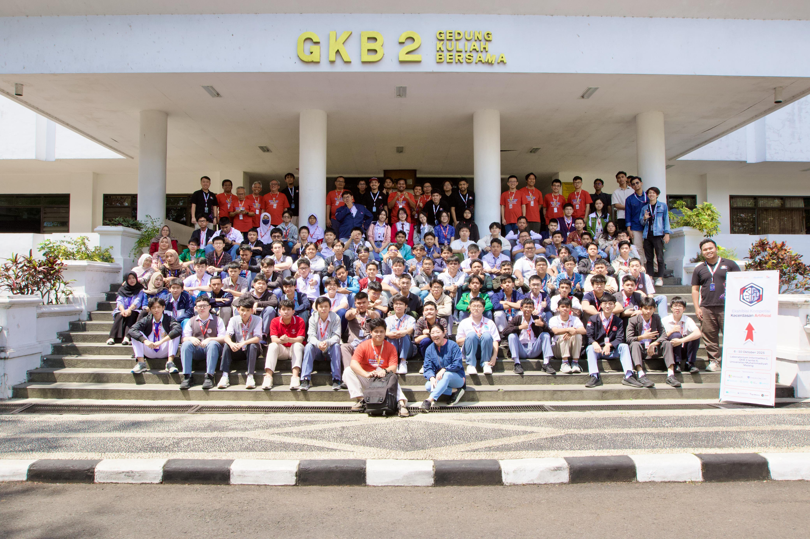
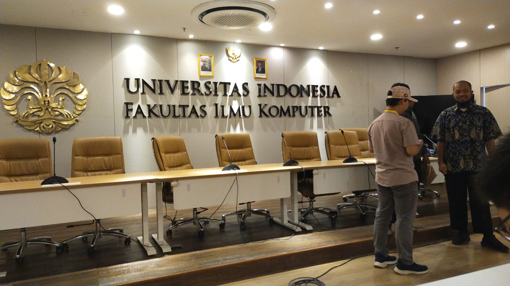
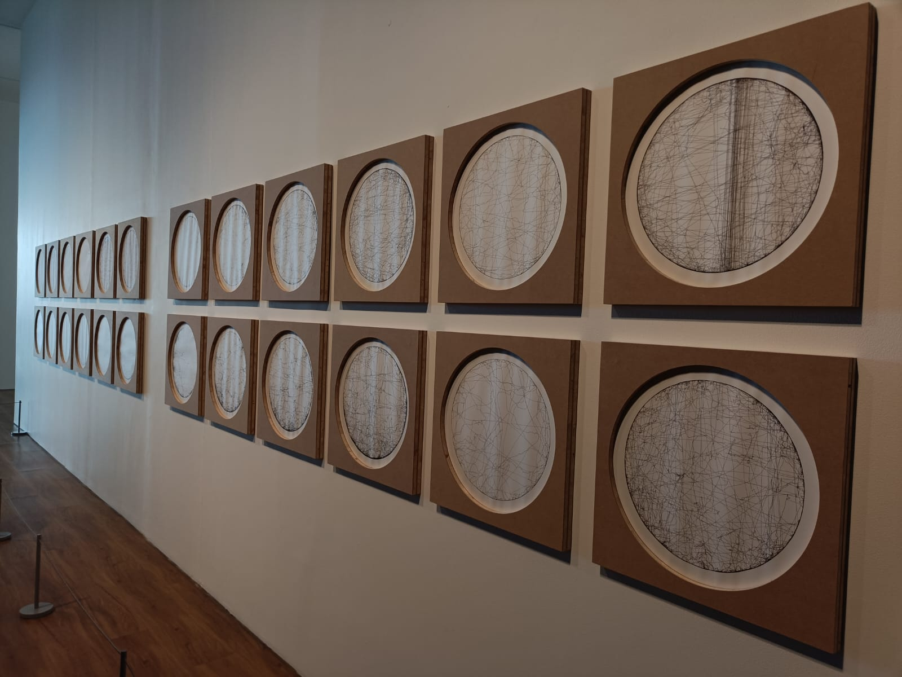
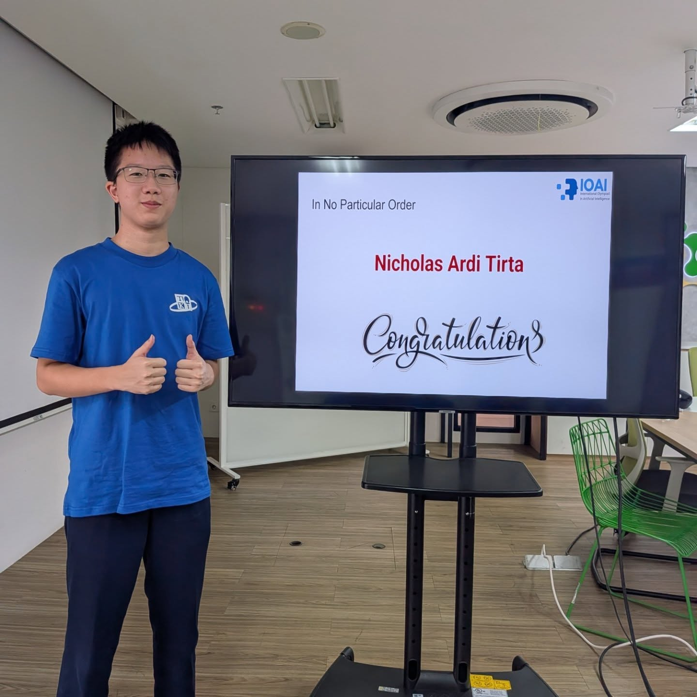

FOTO BELUM ADA
Foto destinasi
Dokumentasi belum tersedia
Program
Judul destinasi
Teks cerita
Jejak Nusantara · Rute Nasional
Website ini saya susun sebagai jurnal perjalanan: ada Final OSN di Malang, OSN AI, Pelatnas IOI, Pelatnas IOAI, Edutrip, dan bagian pendukung seperti transportasi, hotel, makanan, serta dokumen. Setiap halaman dibuat agar pembaca tidak hanya melihat foto, tetapi juga memahami cerita, suasana, dan alasan kenapa momen-momen itu berarti.




Salam Redaksi
Di dalam website ini, pembaca bisa mengikuti beberapa jalur perjalanan yang saling terhubung. Bagian OSN berisi cerita Final OSN di Malang dengan UMM sebagai titik utama, lalu ditambah dokumentasi OSN AI yang memberi sudut pandang lain tentang suasana lomba, kebersamaan peserta, dan momen setelah kompetisi.
Bagian Pelatnas sekarang memuat dua cerita yang berbeda tetapi sama-sama penting. Jalur pertama adalah Pelatnas IOI milik Leonel: tahap 1 di UI, tahap 2 di IPB, dan Kebun Raya Bogor sebagai ruang jeda dan refleksi. Jalur kedua adalah Pelatnas IOAI milik Nicholas yang tahap 1 dan tahap 2 sama-sama berlangsung di UI, lengkap dengan cerita belajar machine learning, statistika, deep learning, simulasi, sampai proses seleksi delegasi Indonesia untuk IOAI.
Bagian Edutrip menampilkan Museum MACAN, Kota Tua, Tzu Chi, dan SAAJA, sementara bagian Pendukung Perjalanan menyimpan detail seperti transportasi, hotel, makanan, dokumen, bahkan beberapa video. Dengan begitu, website ini bukan cuma daftar tempat, tetapi jurnal pengalaman yang terasa lebih hidup.
Pembagian Folder
Setiap kartu bisa diklik untuk membaca cerita yang lebih lengkap. Sekarang bagian Pelatnas sudah memuat jalur IOI dan IOAI, Museum MACAN sudah terisi foto, dan beberapa cerita juga dilengkapi video.
Final OSN di Malang dan tambahan dokumentasi OSN AI yang memperlihatkan suasana lomba, kebersamaan, dan momen setelah kompetisi.
Buka halaman OSN 02Dua jalur pelatnas: IOI milik Leonel dan IOAI milik Nicholas, kini dilengkapi jadwal daring, jadwal luring UI, simulasi, dan capaian APOAI.
Buka halaman Pelatnas 03Jalur edutrip untuk melihat sisi seni, sejarah, lingkungan, dan pelayanan melalui Museum MACAN, Kota Tua, Tzu Chi, dan SAAJA.
Buka halaman Edutrip 04Transportasi, hotel, makanan, dokumen, dan detail kecil lain yang membuat keseluruhan perjalanan terasa lebih nyata.
Buka halaman PendukungHalaman Terpisah
Beranda ini hanya menjadi pintu masuk. Detail panjang, galeri foto, video, pengalaman, dan refleksi dipindahkan ke halaman OSN, Pelatnas, Edutrip, dan Pendukung Perjalanan.
Kolom pencarian di atas dapat dipakai untuk menemukan bagian perjalanan, dokumentasi, atau kata kunci tertentu.
Suara Pembaca
Feedback dari pembaca membantu website ini jadi lebih jelas, lebih enak dibaca, dan lebih terasa seperti jurnal perjalanan yang hidup. Masukan boleh tentang isi cerita, foto, desain, atau bagian mana yang masih membingungkan.
Catatan: form ini masih mode lokal, jadi feedback akan tersimpan di browser yang sedang dipakai.

Setelah perjalanan
Halaman ini sekarang memuat dua jalur lomba dan pelatnas, tambahan foto-foto baru, serta beberapa video. Setiap kartu bisa dibuka untuk melihat kegiatan, pelajaran yang didapat, dan bukti perjalanan dengan konteks yang lebih kaya.
Mulai dari OSN Kirim feedbackProgram
Teks cerita